arasaac 31662
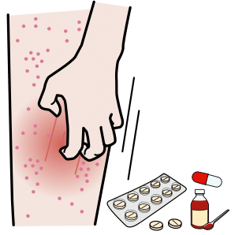
arasaac 31823
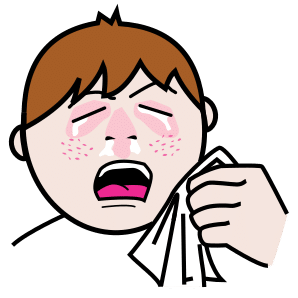
arasaac 31987
arasaac 35957
arasaac 36071
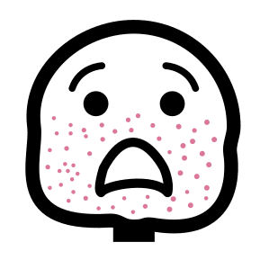
arasaac 39432
arasaac 5372
arasaac 32259
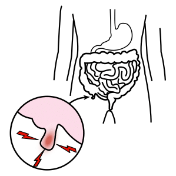
arasaac 38429
arasaac 23761
arasaac 37735
mulberry stroke_,_to
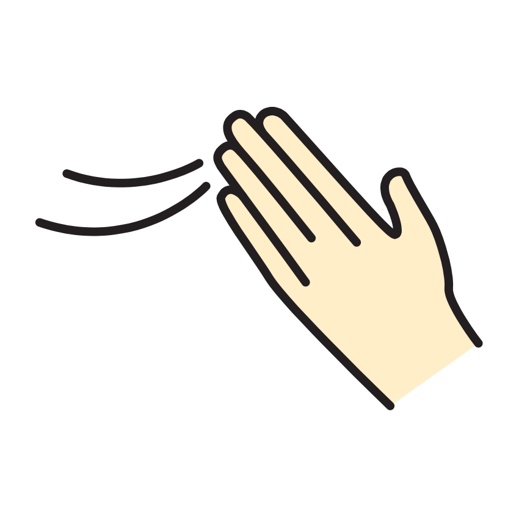
mulberry stroke_2_,_to
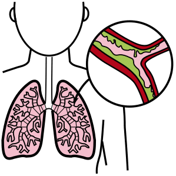
arasaac 37736
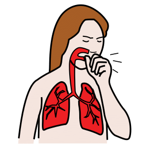
arasaac 5403
openmoji 264B
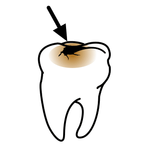
arasaac 21494
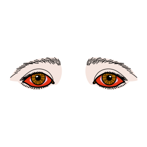
arasaac 25010
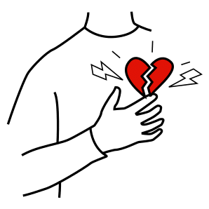
arasaac 5490
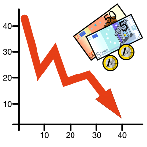
arasaac 15990
arasaac 32326
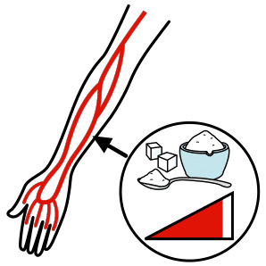
arasaac 28245
arasaac 31432
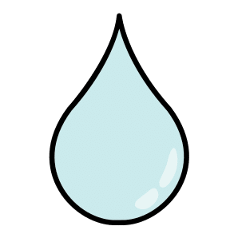
arasaac 8592
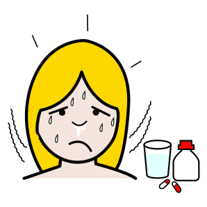
arasaac 28749
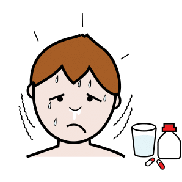
arasaac 5479
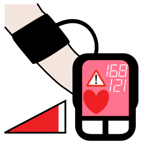
arasaac 37738
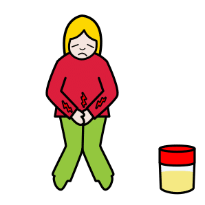
arasaac 31773
arasaac 32296
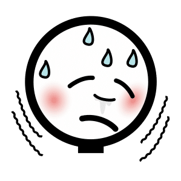
arasaac 38481
arasaac 39142
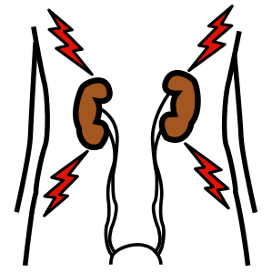
arasaac 37737
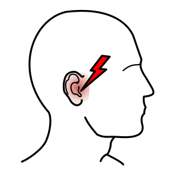
arasaac 10265

arasaac 36143
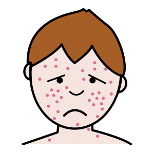
arasaac 7822
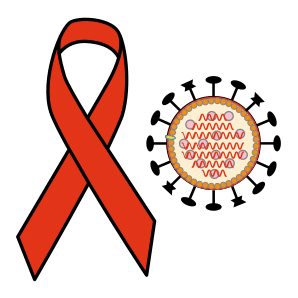
arasaac 24402
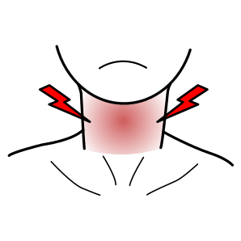
arasaac 10262
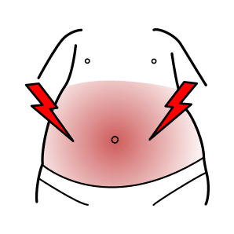
arasaac 10264
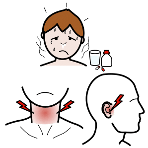
arasaac 11252
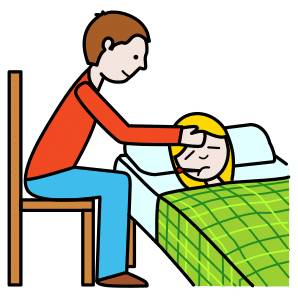
arasaac 11691
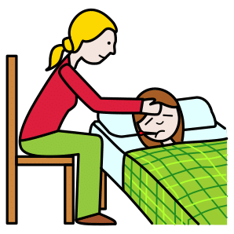
arasaac 11692
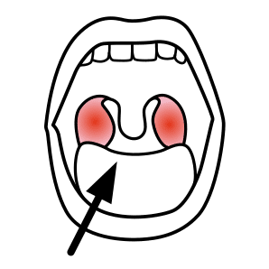
arasaac 14250
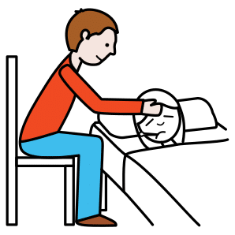
arasaac 14662
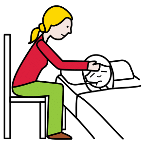
arasaac 14663
arasaac 16347
arasaac 16349
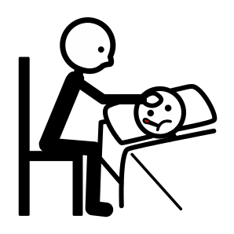
arasaac 16633
arasaac 2376
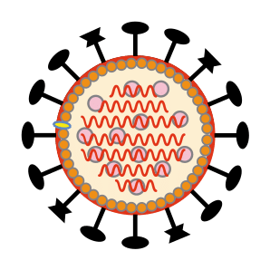
arasaac 24459
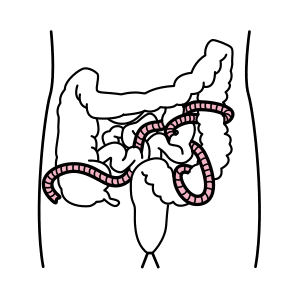
arasaac 25502
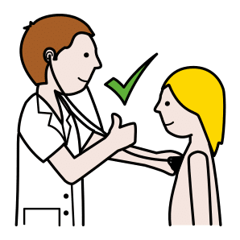
arasaac 29648
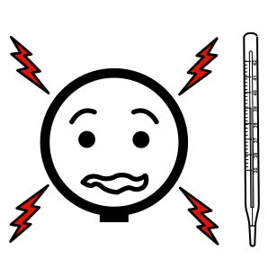
arasaac 30622
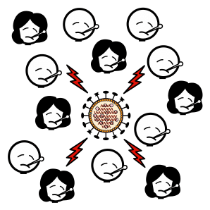
arasaac 30987
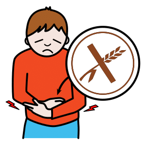
arasaac 31224
arasaac 31768
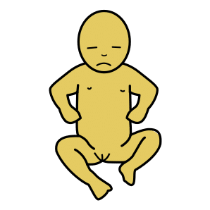
arasaac 31879
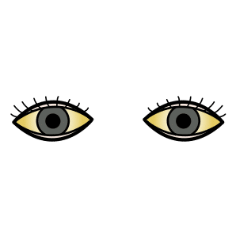
arasaac 32075
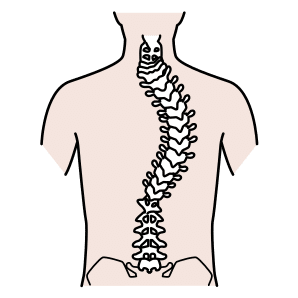
arasaac 32681
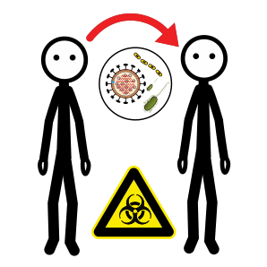
arasaac 35339
arasaac 37682

arasaac 37797
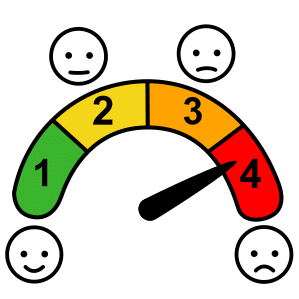
arasaac 39512
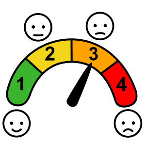
arasaac 39513
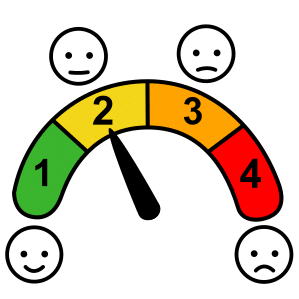
arasaac 39514
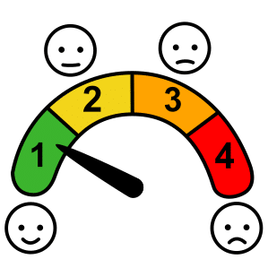
arasaac 39515
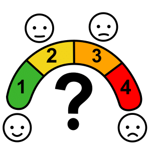
arasaac 39516
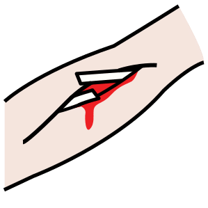
arasaac 39620
arasaac 6637
arasaac 7040
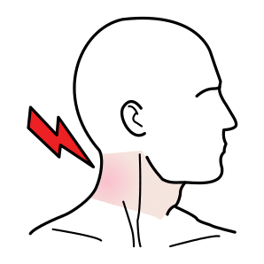
arasaac 7817
arasaac 8558